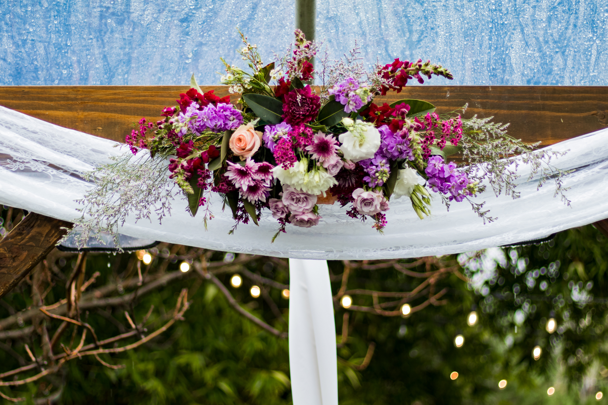
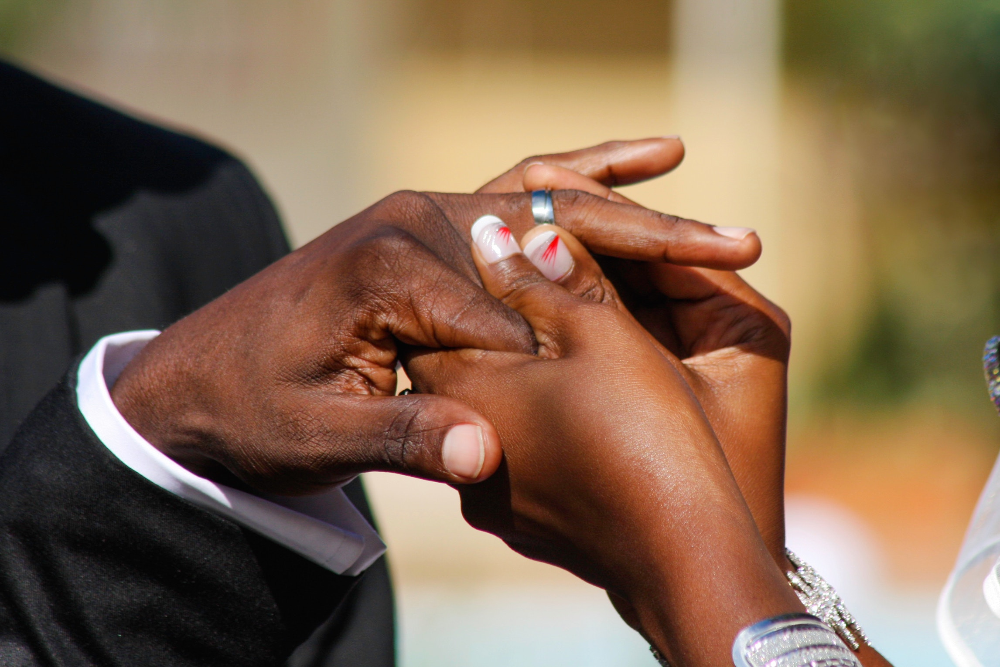

My mom drove me to the ceremony site: Smothers Park, which is in downtown Owensboro on the river front. I sat in her truck watching guests stream in for the ceremony. I was close enough to the ceremony site that I could easily see all of my guests, but none of them saw me. A police officer drove by the truck to see why it was running and no one was in the driver‚Äôs seat, and she saw me sitting in the passenger seat and smiled at me.I don‚Äôt remember what music I had playing for the prelude, and honestly, I don‚Äôt know that my DJ even played any of it. I do know the ceremony was late to start, because it was close to 10 after and I was still sitting in the truck. I impatiently waited for my mom to come get me from the truck, since she would be walking me down the aisle. After what felt like an eternity, Mom finally came for me and we headed towards the overlook. Lydia and her kids were arriving as we were walking toward the overlook and I smiled and waved at them üôÇ I ducked behind a swing to hide until it was my turn to walk down the aisle. The first few notes of ‚ÄúBegin Again (Taylor Swift cover)‚Äù by the Piano Guys began to play and I watched Pastor Greg, Andy, and his brothers take their place. Then, my bridesmaids walked in slowly one by one‚Ķ first Tory, then Brandi, then Brittany. My DJ cut the song off after Brittany took her place (ugh, I wanted it to keep playing).The music switched to the song I‚Äôd be walking down the aisle to: ‚ÄòWhen I Say I Do by Matthew West‚Äù. I waited for the lyrics to begin before my mom and I began walking. We began our trip down the aisle, and I didn‚Äôt notice anything but Andy.
I couldn’t stare at anything but my groom, and he was equally as mesmerized by me. He was crying as I walked down the aisle. Oh, how I wish our videographer had captured Andy wiping away tears as I walked towards him. Mom and I arrived in front of Pastor Greg and Andy turned to stand beside me.Dear friends, we are here assembled in the presence of God to unite Andrew Cummins and Bailey Young in marriage. The Bible teaches that marriage is to be a permanent relationship, one man and one woman, freely and totally committed to each other as companions for life. The Lord declared that a man should leave his father and mother and unite with his wife in the building of a home and the two shall become one flesh. I ask, who gives the bride to be married? My mom replied, “I do.” I gave her a hug and a kiss on the cheek before she sat down to watch the ceremony. I handed my bouquet to Brittany and took Andy’s arm.“Andrew and Bailey, the home is built upon love, which virtue is best portrayed in the 13th chapter of Paul’s first letter to the Corinthians which reads: ‘Love is patient and kind. Love is not jealous or boastful. It is not arrogant or rude. Love does not insist on its on way; it is not irritable or resentful. It does not rejoice in the wrong but rejoices in the right. Love bears all things, believes all things, hopes all things, endures all thing. Love never ends. So faith, hope love abide these thee, but the greatest of these is love.’ (I wanted to incorporate 1 Corinthians 13 into the ceremony because we used those verses at my Papaw’s funeral.) Marriage is a companionship with involves mutual commitment and responsibility. You will share a life in the responsibility and the joys of life. When companions share a sorrow the sorrow is halved, but when companions share a joy, the joy is doubled. You are challenged to embody the promise that was made in the book of Ruth, that says ‘Where you go, I will go. Where you stay, I will stay. Your people will be my people, and your God, my God.’ (I chose the Ruth verses because it was used in Brittany’s wedding, and also because I would be an Army wife, I thought the verses fit.
You are extorted to dedicate your home to your Creator, to take his word the Bible for your guide, to give loyal devotion to his church, thus uniting the mutual strength of these two most important institutions, living your lives as His willing servants and true happiness will be both your temporal and eternal reward.Let us pray. Oh Lord of life and love, bestow Your grace upon this marriage, and seal this commitment of Your children with Your love. As you have brought them together by Your divine providence, sanctify them by Your spirit, that they may give themselves fully, one to the other, and to You. Give them strength and patience to live their lives in a manner that will mutually bless themselves and honor Your most Holy name. It is through Jesus Christ our Lord we pray, Amen. Now Andrew and Bailey, if you would turn and face each other as you exchange vows. We turned to face one another and I don‚Äôt remember anything but looking into his eyes and soaking in the moment. Andrew, you will repeat after me as you make your vow to Bailey. In the name of God I Andrew, take you Bailey to be my wife. To have and to hold from this day forward. For better or for worse. For richer or for poorer. In sickness and in health. To love and to cherish until we are parted by death. This is my solemn vow. I squeezed his hands with a glimmer of happiness in both of our eyes.Bailey, you will repeat after me as you make your vow to Andrew. In the name of God I Bailey, take you Andrew to be my husband. To have and to hold from this day forward. For better or for worse. For richer or for poorer. In sickness and in health. To love and to cherish until we are parted by death. This is my solemn vow.Now would you turn and face me. Andrew and Bailey, the wedding ring is a symbol of marriage in that the unending circle symbolizes the unending vows which you are taking, which may be broken honorably by God only by death. As a token of your vows, you will give and receive the ring. Parker handed my ring to Pastor Greg, who then gave it to Andy. Andrew, you will take the ring and repeat after me. Bailey, with this ring, I pledge my life and love to you, in the name of the Father and of the Son and of the Holy Spirit. Andy slipped the wedding band onto my finger. Parker then handed Pastor Greg Andy‚Äôs wedding band, who then passed it to me.Bailey, you will give the ring and repeat after me. Andrew, with this ring, I pledge my life and love to you, in the name of the Father and of the Son and of the Holy Spirit. I slipped Andy‚Äôs wedding band onto his finger.Now would you turn and face me. Since they have made these commitments before God and this assembly, by the authority of God and the laws of this state, I now declare that Andrew and Bailey are husband and wife. And they‚Äôre smiling really big right now üôÇ I giggled. Andrew and Bailey, according to Jesus in His word, the Bible, in the Book for Matthew, you are no longer two independent persons but one.
Jesus said ‘What God has joined together, let no man separate.’ And now, as a symbol of your love for one another and your commitment to serve each other as an expression of the love of Christ, you both will participate in a foot washing ceremony.
Jesus taught us in John chapter 13 to love each other by serving each other. He modeled this principle in the washing of His disciples’ feet. The Bible says ‘He (Jesus) poured water into a basin and began to wash His disciples’ feet. He then said,
‘Now that I your Lord and teacher have washed your feet, you also should watch one another’s feet. I’ve set you an example.’ So now Andrew and Bailey, you will symbolize your commitment to love and serve one another by making your first act of
marriage the humble washing of feet. Our bridal party sat down as we went to the side, where a bowl, pitcher, and chair were waiting for us. My friend Julie began to play her guitar and sing “Love Never Fails” by Brandon Heath. I sat down in the
chair. Brittany adjusted my train, and Andy began to wash my feet. I slipped my flats back on, and then we traded places.Andy had a hard time untying his shoes and slipping his socks off, and we didn’t quite finish before the song ended, so Julie
continued to play and repeat the chorus. Once we were finished, we rejoined Pastor Greg at the center of the overlook and our bridal party came from their seats to join us.And now, Andrew and Bailey, may the Lord bless you and keep you. May the
Lord make His face shine upon you and be gracious to you. May the Lord lift up his countenance upon you and give you peace. Amen. Andrew, you may now kiss your bride. We shared in our first kiss as husband and wife.It is now my distinct privilege
and honor to present to you Mr. and Mrs. Andrew Cummins. We walked back up the aisle, this time to “See You Tonight” by Scotty McCreery. If you’ve never seen the music video, it tells the story of a soldier who drives hours to see his And with
that, our wedding ceremony was complete! girlfriend. I’ve said since the beginning that “See You Tonight” is our song, because it so perfectly captures our relationship. Our bridal party followed us back up the aisle.And with that, our wedding
ceremony was complete!
~Andrew and Bailey~